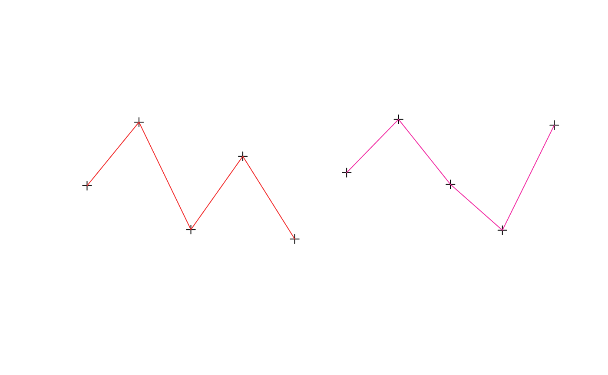

An extension of SpatialPointsDataFrame by including
"TimeOrderedRecords". The records within the data frame are
explicitly ordered by DateTime data within IDs.
Objects can be created by calls of the form
trip(obj="SpatialPointsDataFrame", TORnames="TimeOrderedRecords").
The object contains all the slots present within a
SpatialPointsDataFrame, particularly data which
contains columns of at least those specified by TOR.columns.
trip for examples of directly using the class.
trip-accessors describes methods for accessing information on
trip objects.
showClass("trip")#> Class "trip" [package "trip"] #> #> Slots: #> #> Name: TOR.columns data coords.nrs coords bbox proj4string #> Class: character data.frame numeric matrix matrix CRS #> #> Extends: #> Class "TimeOrderedRecords", directly #> Class "SpatialPointsDataFrame", directly #> Class "SpatialPoints", by class "SpatialPointsDataFrame", distance 2 #> Class "Spatial", by class "SpatialPointsDataFrame", distance 3 #> Class "SpatialVector", by class "SpatialPointsDataFrame", distance 3d <- data.frame(x=1:10, y=rnorm(10), tms=Sys.time() + 1:10, id=gl(2, 5)) coordinates(d) <- ~x+y ## this avoids complaints later, but these are not real track data (!) proj4string(d) <- CRS("+proj=laea +ellps=sphere") tr <- trip(d, c("tms", "id")) summary(tr)#> #> Object of class trip #> tripID ("id") No.Records startTime ("tms") endTime ("tms") tripDuration #> 1 1 5 2019-04-04 02:18:45 2019-04-04 02:18:49 4 secs #> 2 2 5 2019-04-04 02:18:50 2019-04-04 02:18:54 4 secs #> tripDistance meanSpeed maxSpeed #> 1 7.101930 6391.737 7346.987 #> 2 7.108215 6397.393 8660.743 #> #> Total trip duration: 8 seconds (0 hours, 8 seconds) #> #> Derived from Spatial data: #> #> Object of class SpatialPointsDataFrame #> Coordinates: #> min max #> x 1.000000 10.000000 #> y -1.699451 1.113952 #> Is projected: TRUE #> proj4string : [+proj=laea +ellps=sphere] #> Number of points: 10 #> Data attributes: #> tms id #> Min. :2019-04-04 02:18:45 1:5 #> 1st Qu.:2019-04-04 02:18:47 2:5 #> Median :2019-04-04 02:18:49 #> Mean :2019-04-04 02:18:49 #> 3rd Qu.:2019-04-04 02:18:51 #> Max. :2019-04-04 02:18:54 #>plot(tr)lines(tr)dim(tr)#> [1] 10 2names(tr)#> [1] "tms" "id"#> #> Object of class trip #> tripID ("id") No.Records startTime ("tms") endTime ("tms") tripDuration #> 1 2 5 2019-04-04 02:18:50 2019-04-04 02:18:54 4 secs #> #> data.columns data.class #> 1 tms POSIXct **trip DateTime** #> 2 id factor **trip ID** #>as.data.frame(tr)#> x y tms id #> 1 1 1.0743459 2019-04-04 02:18:45 1 #> 2 2 -0.6650882 2019-04-04 02:18:46 1 #> 3 3 1.1139524 2019-04-04 02:18:47 1 #> 4 4 -0.2458964 2019-04-04 02:18:48 1 #> 5 5 -1.1775633 2019-04-04 02:18:49 1 #> 6 6 -0.9758506 2019-04-04 02:18:50 2 #> 7 7 1.0650573 2019-04-04 02:18:51 2 #> 8 8 0.1316706 2019-04-04 02:18:52 2 #> 9 9 0.4886288 2019-04-04 02:18:53 2 #> 10 10 -1.6994506 2019-04-04 02:18:54 2tr[1:3, ]#> #> Object of class trip #> tripID ("id") No.Records startTime ("tms") endTime ("tms") tripDuration #> 1 1 3 2019-04-04 02:18:45 2019-04-04 02:18:47 2 secs #> #> data.columns data.class #> 1 tms POSIXct **trip DateTime** #> 2 id factor **trip ID** #>tr[, 1]#> trip-defining Date or ID columns dropped, reverting to SpatialPointsDataFrame #>#> class : SpatialPointsDataFrame #> features : 10 #> extent : 1, 10, -1.699451, 1.113952 (xmin, xmax, ymin, ymax) #> coord. ref. : +proj=laea +ellps=sphere #> variables : 1 #> names : tms #> min values : 2019-04-04 02:18:45 #> max values : 2019-04-04 02:18:54tr[[1]]#> [1] "2019-04-04 02:18:45 UTC" "2019-04-04 02:18:46 UTC" #> [3] "2019-04-04 02:18:47 UTC" "2019-04-04 02:18:48 UTC" #> [5] "2019-04-04 02:18:49 UTC" "2019-04-04 02:18:50 UTC" #> [7] "2019-04-04 02:18:51 UTC" "2019-04-04 02:18:52 UTC" #> [9] "2019-04-04 02:18:53 UTC" "2019-04-04 02:18:54 UTC"